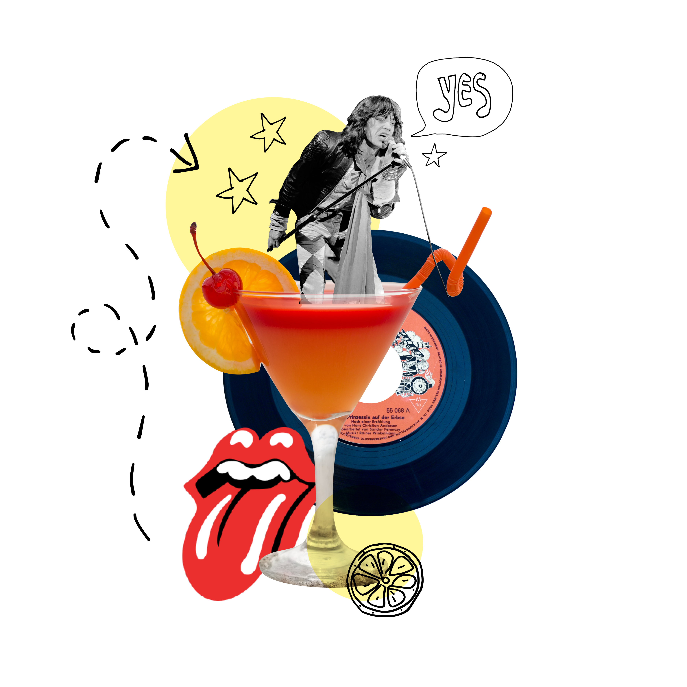
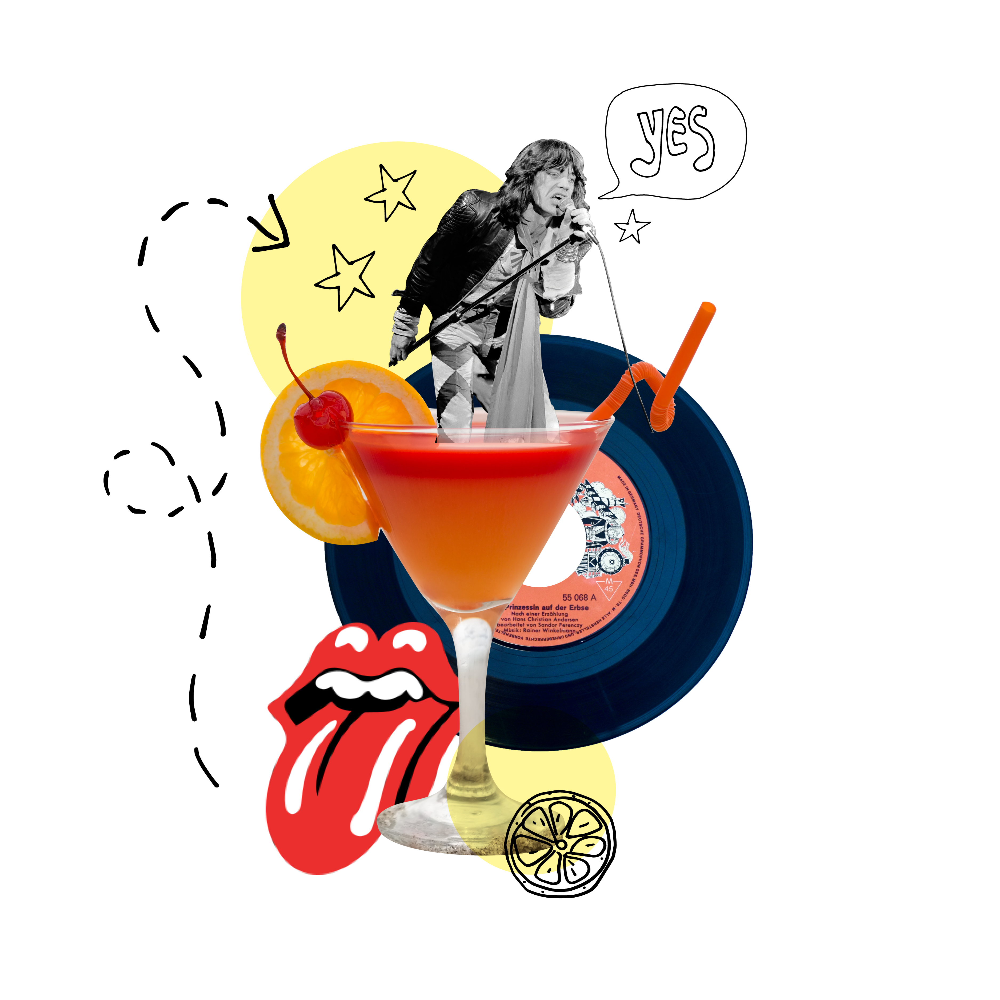
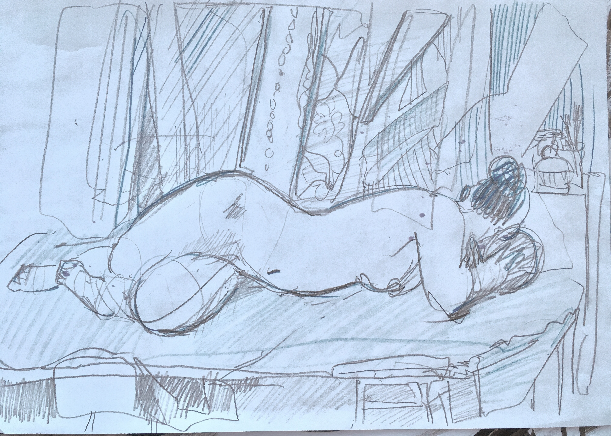
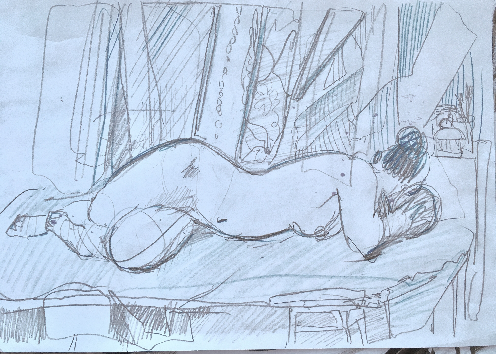
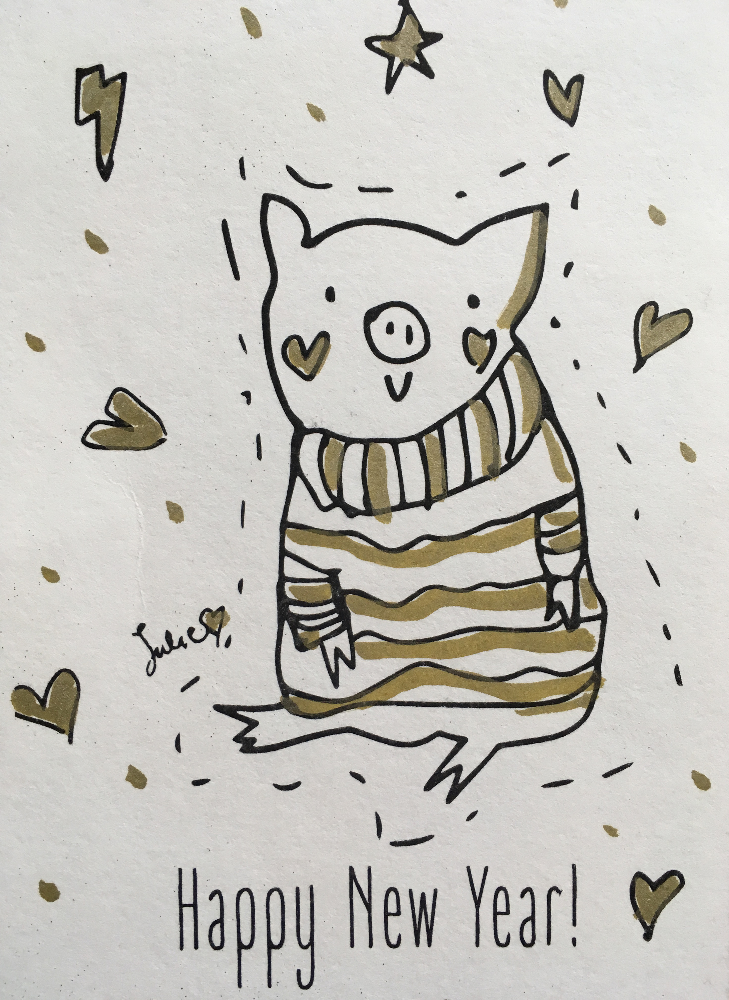
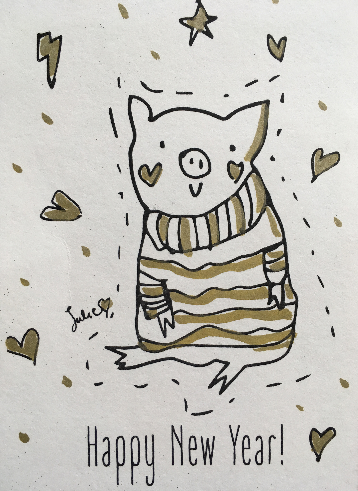

Yulia Dudina
Artist
About
Yulia Dudina, born in 1994 in Moscow,
in a family of artists and graphic designers,
is an Italian based contemporary artist, illustrator and graphic designer with a multi-
disciplinary approach. She works with different mediums, classic and digital ones,
in the spectrum from illustration and calligraphy to production design for film
and theatre, from fine art to street art.
Education
Now: since 2024 BA in Graphic design and Visual Communication at ISIA Urbino.
2020 Calligraphy course by E. Dobrovinsky, Moscow.
2015-2018 Filmmaking at VGIK, Moscow.
2008-2012 Art School Vatagin, Moscow.
Contact
instagram: https://www.instagram.com/julie_punkbabe/
mail: juliedudin@gmail.com


 

 

 


My Short Film "Adelaida", 2017: https://www.youtube.com/watch?v=2MjVzaaM1bI&t=43s
My Fashion Project: https://www.instagram.com/punkbabe_shop/

My Film Photo Archive: https://juliepunkbabe.tumblr.com